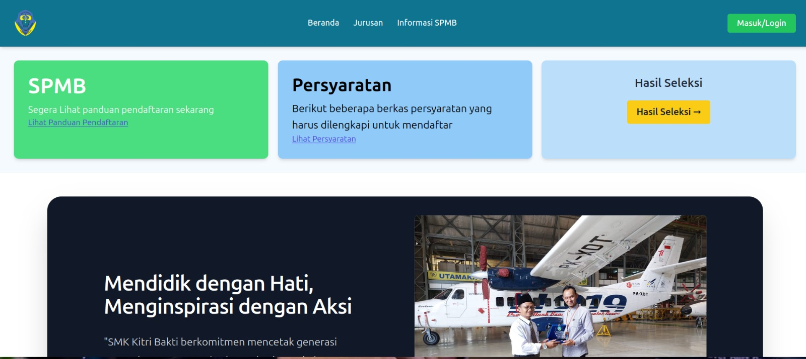
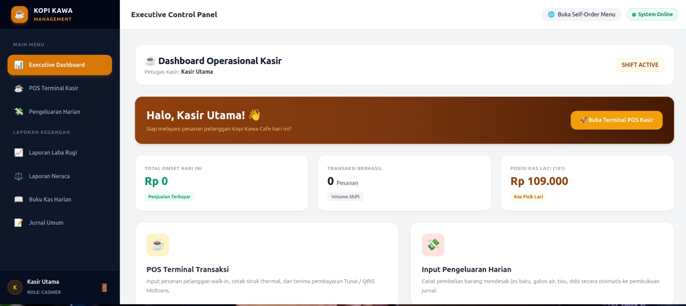
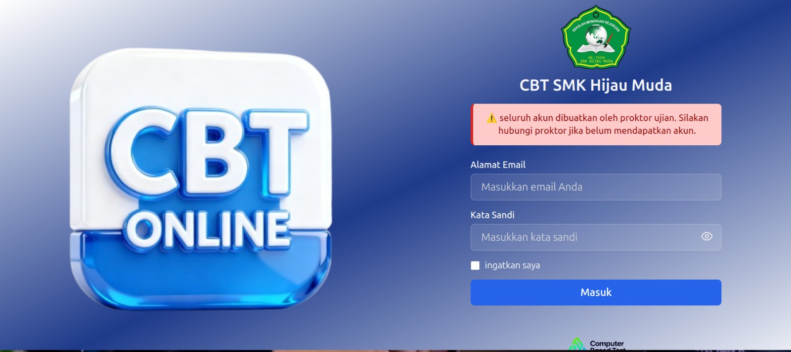
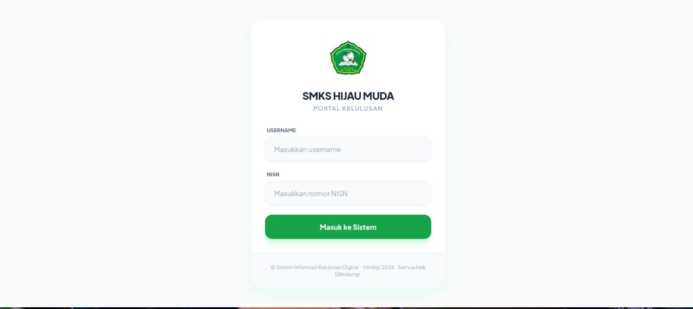
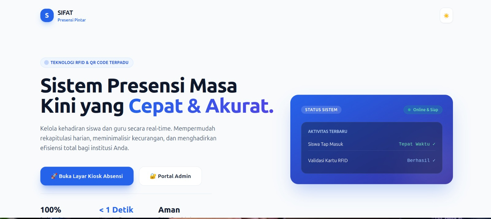

Halo, Saya Andika
Full Stack
Berpengalaman merancang & mengimplementasikan aplikasi web berskala enterprise, sistem manajemen pendidikan terpusat, IoT absensi RFID/QR, hingga platform bisnis POS & keuangan.
const developer = {
name: 'Andika',
role: 'Full Stack Software Engineer',
specialities: [
'Enterprise School Information Systems',
'Realtime CBT & E-Learning Platforms',
'IoT Attendance (RFID/QR Code)',
'POS & Financial Accounting Web Systems'
],
codeCleanliness: true
};
Fokus Membangun Solusi Perangkat Lunak Terintegrasi, Andal, & Efisien.
Saya adalah seorang Software Engineer dengan spesialisasi pengembangan aplikasi web ujung ke ujung (*full-stack*). Memiliki rekam jejak dalam merancang sistem manajemen data sekolah terpusat, ujian online berkinerja tinggi (CBT), integrasi perangkat keras IoT RFID untuk absensi, hingga sistem informasi bisnis & akuntansi.
Pendekatan saya mengutamakan performa query database MySQL yang optimal, struktur kode yang mudah dipelihara (*clean code*), fleksibilitas antarmuka modern dengan Tailwind CSS & Next.js/Laravel, serta pengalaman pengguna yang responsif.
Sistem Utama Berhasil Rilis
Responsif & Mobile Friendly
Framework Mastery
Performance & Query DB
Alat & Teknologi Utama
Teknologi modern yang saya gunakan sehari-hari untuk memproduksi perangkat lunak tingkat produksi.
Laravel
PHP Framework, Eloquent ORM, REST API, Auth & Middleware.
PHP Basic & OOP
Backend Architecture, Secure Scripting, Session Management.
Next.js & React
Server Side Rendering, App Router, Reactive Components.
Node.js
Event-Driven Server, Express, WebSockets, IoT Integrations.
Vite & JS ES6+
Lightning Fast Frontend Bundling, Dynamic Async Logic.
MySQL Database
Relational Database Design, Indexing & Query Optimization.
Tailwind CSS
Utility-First Responsive Design, UI Components, Dark Theme.
REST APIs & WebSockets
API Endpoint Design, Realtime Hardware & Sensor Interfacing.
Git & GitHub
Version Control, Branching, Collaborative Workflows.
Netlify & Cloud Hosting
Continuous Deployment, Netlify Forms, Serverless Functions.
Proyek Perangkat Lunak Riil
Kumpulan 10 proyek sistem terintegrasi yang pernah saya kembangkan dari konsep hingga tahap implementasi.
 Enterprise System
Enterprise System
1. SIM Data Sekolah Terpusat
Platform pengelolaan data akademik terpadu untuk siswa, guru, kurikulum, serta rekapitulasi laporan nilai secara multi-role aman.

Portal PMB2. SPMB (Sistem Penerimaan Murid Baru)
Web pendaftaran siswa baru online dengan verifikasi berkas otomatis, cetak kartu ujian pendaftaran, dan seleksi nilai terintegrasi.

POS & Financial3. Coffee Shop & Financial Report
Sistem Point of Sale (POS) kedai kopi dengan fitur transaksi kasir, manajemen stok bahan baku, serta modul pencatatan laba rugi.

High Concurrency4. Computer Based Test (CBT)
Platform ujian online berbasis web dengan pengacakan soal, timer presisi, proteksi kecurangan tab, dan penilaian otomatis cepat.

Fast Lookup5. Sistem Pengumuman Kelulusan
Web pengumuman status kelulusan siswa secara online dengan fitur pencarian NISN/NIPD cepat & unduh Surat Keterangan Lulus (SKL) PDF.
 Interactive LMS
Interactive LMS
6. E-Learning Platform / LMS
Platform pembelajaran jarak jauh interaktif dengan fitur modul materi, pengumpulan tugas digital, ruang diskusi, dan rekap nilai.

IoT Hardware Integration7. Absensi Tap QR Code & RFID
Sistem presensi real-time berbasis hardware RFID dan scanner QR Code terhubung dengan database pusat serta notifikasi status kehadiran.
 Business ERP
Business ERP
8. Web Laundry Management
Sistem manajemen operasional laundry: penimbangan kiloan/satuan, pelacakan status cuci, nota digital, dan rekap pendapatan bulanan.
 Modern E-Catalog
Modern E-Catalog
9. Web Profil & Katalog UMKM
Web profil usaha usaha mikro dengan katalog produk interaktif, fitur integrasi order langsung ke WhatsApp, dan optimasi SEO.
 Interactive Site
Interactive Site
10. Personal Branding & Portfolio
Web portofolio interaktif ultra cepat dengan Glassmorphism theme, animasi Typewriter, Netlify Form, dan responsive layout.
Pengalaman & Fokus Solusi
Langkah perjalanan saya dalam mengembangkan sistem terintegrasi.
Full Stack Software Engineer
Pengembang Sistem Web & Enterprise Specialist
Mengembangkan arsitektur aplikasi web berkinerja tinggi menggunakan Laravel, Next.js, dan Node.js. Menangani integrasi database MySQL, REST API, serta implementasi fitur bisnis seperti POS, laporan keuangan, dan portal data pendidikan.
IoT & Realtime Web Developer
Sistem Absensi RFID & CBT Engine
Merancang integrasi perangkat keras sensor RFID dan scanner QR Code dengan server backend Node.js & PHP untuk sistem absensi terpusat, serta mengembangkan engine ujian CBT dengan keamanan anti-cheat.
Mari Bangun Solusi Perangkat Lunak Bersama.
Punya proyek pembuatan sistem informasi, kebutuhan rekruitasi software engineer, atau diskusi teknis? Silakan kirimkan pesan di bawah ini.
Email Langsung
trindigi310@gmail.comGitHub Profile
github.com/andika-dev